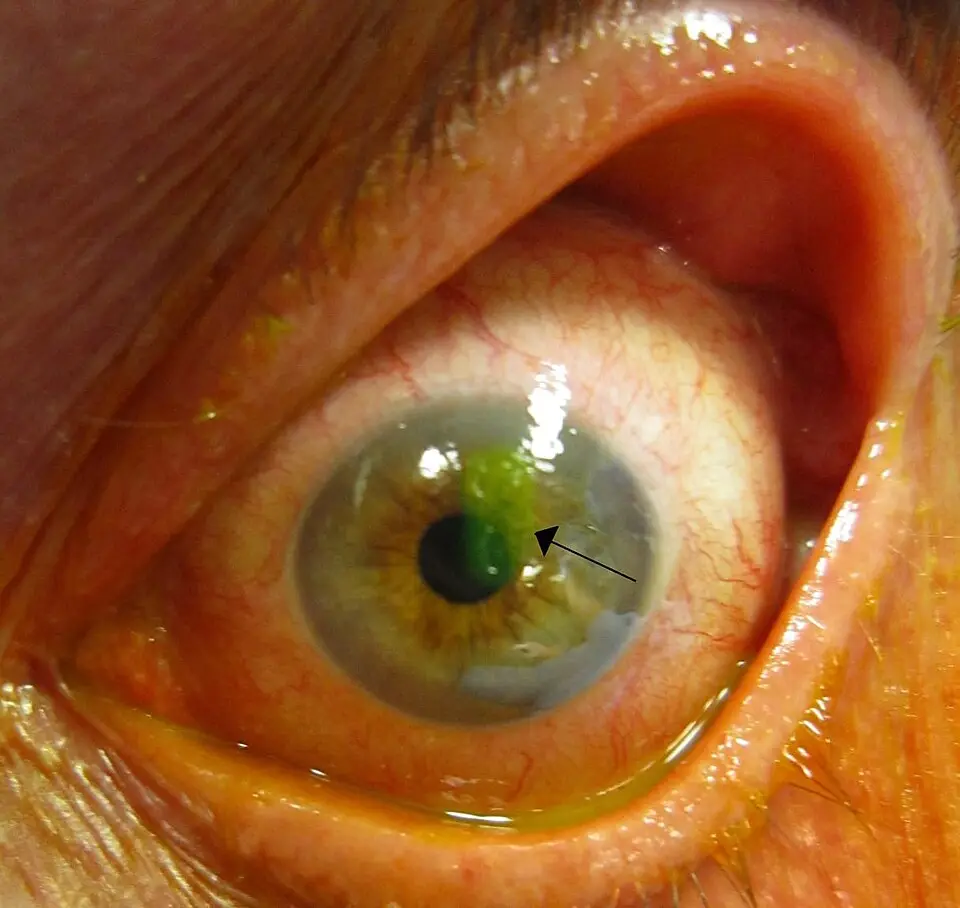

DX.6 — Kératite aiguë 🚩 E1
Un œil rouge et douloureux que le patient ne parvient plus à ouvrir cache souvent une kératite, et non une dystonieS1. Le blépharospasme est alors un réflexe de défense contre une cornée léséeS1S16. Chez le porteur de lentilles, l'infection évolue plus vite et menace la vision en quelques joursS1S4. Le médecin de premier recours retire les lentilles, mesure l'acuité, colore la cornée et adresse le jour même à l'ophtalmologueS1S2.
1. Définition
Le Service de médecine de premier recours des Hôpitaux universitaires de Genève (HUG) définit la kératite comme une inflammation de la cornée, souvent associée à une inflammation conjonctivaleS1. L'atteinte est fréquemment infectieuse, surtout bactérienne, mais aussi virale, parasitaire ou fongiqueS1. Des causes non infectieuses existent, notamment traumatiques et la photokératite après exposition aux ultravioletsS1. La kératite aiguë désigne ici une atteinte récente, installée en heures ou en jours, qui exige un examen spécialisé en urgenceS1.
2. Épidémiologie (Suisse, puis Europe)
L'œil rouge représente 2 à 3 % des motifs de consultation en médecine de premier recours, et la kératite figure parmi ses causes à adresser au spécialisteS1. La Suisse ne publie pas d'incidence nationale de toutes les kératites infectieuses ; les registres suisses décrivent en revanche chaque germe séparémentS9S11S12. Les données suisses par germe montrent que le virus Herpes simplex de type 1 domine les kératites herpétiques et que les lentilles dominent les kératites fongiques et amibiennesS11S12S10. Les groupes à risque et l'histoire naturelle expliquent le rang E1 : une cornée infectée peut perdre la vision ou se perforerS1.
Chiffres suisses par germe
Chaque série suisse décrit un germe, une période et un recrutement différents ; on ne les additionne donc pas.
| Germe | Série | Résultat | Source |
|---|---|---|---|
| Acanthamoeba | 271 cas positifs en PCR ou en culture, 2010–2023 | 2,29 cas par million d'habitants et par an, sans tendance significative | Suisse entière, centres tertiaires et grands centresS9 |
| Acanthamoeba | 52 patients, 59 yeux, 2010–2023 | Lentilles chez 92,3 % ; délai médian de 18 jours avant le diagnostic | Hôpital universitaire de ZurichS10 |
| Virus herpétiques | 2892 patients, 9954 PCR, 2010–2025 | HSV-1 65,4 %, virus varicelle-zona 32,5 %, HSV-2 2,1 % des triplets positifs | Centre tertiaire suisseS11 |
| Champignons | 206 patients, 2012–2023 | Lentilles chez 74,8 % ; âge médian de 38 ans ; moisissures 1,8 fois plus fréquentes que levures | Centre tertiaire suisseS12 |
| Bactéries et champignons en cabinet | 112 patients, 2014–2024 | 157 isolats bactériens, 10 fongiques ; staphylocoques à coagulase négative en tête | Cabinet d'ophtalmologie, ArgovieS13 |
Les infections amibiennes surviennent surtout en été, avec 32,1 % des cas, puis en automne avec 27,3 %S9. Cette saison chaude rappelle le rôle de l'eau et de l'environnement dans la contamination des lentillesS9.
Qui est exposé
Le port de lentilles, un traumatisme ou une chirurgie oculaire récente favorisent la kératiteS1. Une paralysie du nerf facial laisse la cornée exposée, tandis qu'une atteinte de la première branche du trijumeau la rend insensible, ce qui supprime la douleur d'alarmeS1.
Dans une enquête suisse menée dans cinq institutions, 156 porteurs de lentilles ont été interrogés entre août 2023 et août 2024S14. Tous les sous-groupes présentaient des comportements à risque : mains non lavées, port prolongé, sommeil avec les lentilles, contact avec l'eau ou la saliveS14. Les porteurs de lentilles rigides se disaient mieux informés et prenaient moins de risques que les porteurs de lentilles souplesS14.
Le patient diabétique mérite une vigilance particulière, car sa douleur peut manquer malgré une lésion cornéenneS1. Les kératites herpétiques à HSV-1 touchent davantage les hommes, avec 58,9 % des cas dans la série suisseS11.
Histoire naturelle et pronostic
Sans traitement, l'infection détruit le stroma, laisse une cicatrice opaque ou perfore le globeS1. La HUG retient deux complications majeures : la perte de vision irréversible et la perforationS1.
La kératite amibienne illustre le poids du retard : un diagnostic tardif s'associe à un résultat visuel nettement moins bonS4. Plus de 50 % des cas européens sont d'abord pris pour une kératite herpétiqueS4. À Zurich, le traitement médical a pourtant réussi chez 45 patients sur 46 lorsque le diagnostic était poséS10.
La kératite herpétique récidive ; l'antiviral oral à faible dose diminue de 50 % les récidives stromales lorsqu'il est pris en préventionS3.
3. Physiopathologie
La kératite se comprend mieux après une base à connaître sur la structure de la cornée et sur le réflexe de clignementS15S16. La cornée est transparente parce qu'elle n'a aucun vaisseau et que ses fibres de collagène sont rangées avec précisionS15. Elle se nourrit surtout par l'humeur aqueuse et le film lacrymal, ce qui explique sa fragilité devant l'infectionS15.
Base à connaître — cornée et réflexe cornéen
La cornée, dont le DX.5 détaille les couches, résiste à l'infection par son épithélium, qui se renouvelle en 7 à 10 joursS15. Ses jonctions serrées arrêtent les larmes et les germes entre les cellulesS15.
L'endothélium pompe l'eau hors du stroma et ne se régénère pas chez l'adulteS15.
Le réflexe cornéen, qui passe par le trijumeau puis par le facial, ferme les paupières devant toute douleur cornéenne et imite ainsi un blépharospasmeS16S1.
Coupe verticale de la cornée humaine selon Gray. Ce cliché est un dessin histologique, coupe verticale près du limbe, face antérieure en haut

Lisez d'abord seul ce cliché (coupe verticale de la cornée humaine selon Gray) : cherchez vous-même le signe.
La copie annotée (coupe verticale de la cornée humaine selon Gray) indique les repères décrits ci-dessous.
- L’épithélium (repère un) constitue la barrière de surface ; sa perte prend la fluorescéine.
- La couche de Bowman (repère deux) ne se régénère pas ; une lésion qui la franchit laisse une cicatrice.
- Le stroma (repère trois) occupe l’essentiel de l’épaisseur ; son infiltrat devient une tache blanche.
- La membrane de Descemet et l’endothélium (repère quatre) ferment la face postérieure ; l’endothélium ne se divise plus chez l’adulte.
- Ce dessin ancien ne montre ni les nerfs sous-épithéliaux, ni la couche pré-descemétique décrite récemment.
- Les proportions du dessin ne respectent pas l’épaisseur réelle de chaque couche.
Ce que l'image décide. La profondeur atteinte décide du pronostic : l’épithélium seul cicatrise sans trace, le stroma laisse une cicatrice, l’atteinte postérieure menace de perforation.

Deux erreurs se corrigent par cette anatomie. Une cornée insensible, après zona ou atteinte du trijumeau, ne protège plus l'œil et ne fait plus malS1. Un nerf facial paralysé empêche l'occlusion, si bien que la cornée se dessèche puis s'ulcèreS1.
L'amorce est presque toujours une brèche épithéliale : lentille portée trop longtemps, microtraumatisme, corps végétal ou surface sècheS1S5S14. Le germe adhère alors au stroma, s'y multiplie et attire les polynucléaires, dont les enzymes digèrent le collagèneS15S2. L'évolution par étapes relie chaque perturbation au signe, à l'examen et au traitementS1S2. Le tableau de corrélation résume cette chaîne en une lectureS2S3.
Amorce, développement, installation, maintien
Amorce. La lentille, l'eau ou le traumatisme rompent la barrière épithéliale et apportent le germe au contact du stromaS4S14.
Développement. L'infiltrat de polynucléaires forme la tache blanche visible à la lampe à fente ; la perte épithéliale prend la fluorescéineS1S2.
Installation. L'inflammation diffuse vers l'iris et la chambre antérieure ; les cellules s'y déposent en niveau, ce qui forme l'hypopionS1S2.
Maintien. La lyse du stroma amincit la cornée jusqu'à la perforation ; un amincissement de 50 % ou plus justifie une hospitalisationS2.
Dans l'herpès, le virus détruit l'épithélium en dessinant une dendrite ; dans le stroma, c'est surtout la réponse immunitaire qui lèse le tissuS3. Cette différence explique pourquoi le corticoïde aggrave la forme épithéliale, alors que le spécialiste l'emploie pour la forme stromaleS3S1.
Corrélation : perturbation → exploration → thérapeutique
| Perturbation | Ce qui la montre | Ce qui la corrige |
|---|---|---|
| Brèche épithéliale | Prise de fluorescéine à la lumière bleue | Arrêt des lentilles ; antibiotique local selon la gravitéS2 |
| Infiltrat stromal | Tache blanche à la fente fine ; mesure en millimètres | Grattage avant antibiotique si signe de gravitéS2 |
| Réaction de chambre antérieure | Cellules dans le faisceau ; hypopion | Urgence ophtalmologique ; cycloplégique pour le confortS2S1 |
| Dendrite épithéliale | Arbre ramifié coloré, sensibilité diminuée | Antiviral local ; aucun corticoïde en premier recoursS3S1 |
| Infiltrats périneuraux, douleur intense | Grattage, PCR, microscopie confocale | Anti-amibien intensif pendant des moisS4 |
| Amincissement, fuite | Signe de perforation imminente | Hospitalisation ; protection sans pressionS2 |
4. Démarche diagnostique
Devant une fermeture palpébrale avec œil rouge, le médecin cherche d'abord ce qui menace la vision : baisse d'acuité, douleur intense, photophobie, opacité cornéenneS1. La kératite infectieuse vient en tête, car elle impose un avis spécialisé le jour mêmeS1. Elle se distingue de l'abrasion simple, de la conjonctivite, de l'uvéite et de la crise de fermeture de l'angle par quelques éléments qui tranchentS1S2.
Le débutant commet une erreur classique : il colle l'étiquette « blépharospasme » ou « conjonctivite » sans avoir ouvert l'œilS1. Il l'évite par trois gestes simples : instiller un anesthésique pour examiner, mesurer l'acuité de chaque œil, colorer la cornée à la fluorescéineS24S1. Cet anesthésique sert seulement à l'examen et ne se remet jamais au patientS24S6.
Diagnostics différentiels : graves d'abord
| Diagnostic | Élément qui tranche | Piège | Conduite |
|---|---|---|---|
| 🚩 Kératite infectieuse | Infiltrat blanc, défaut épithélial, cercle périkératique | Croire à une conjonctivite chez un porteur de lentilles | Avis ophtalmologique en urgenceS1 |
| 🚩 Crise de fermeture de l'angle | Cornée œdémateuse, pupille en semi-mydriase, céphalée | Prendre la céphalée pour une migraine | Avis spécialisé immédiatS1 |
| 🚩 Uvéite antérieure | Cellules de chambre antérieure sans prise de fluorescéine | Prescrire un corticoïde sans examen à la lampe à fente | Appel de l'ophtalmologue en urgenceS1 |
| Abrasion ou corps étranger | Traumatisme récent, défaut net sans infiltrat | Oublier d'éverser la paupière supérieure | Voir le diagnostic DX.5 |
| Infiltrats liés aux lentilles | Petits infiltrats périphériques, peu de réaction | Ne pas surveiller les 24 à 48 premières heuresS8 | Arrêt des lentilles, contrôle rapprochéS8 |
| Conjonctivite | Vision conservée, cornée claire, sécrétions | Traiter un œil douloureux et photophobe comme une conjonctivite | Traitement local en premier recoursS1 |
5. Anamnèse ciblée et drapeaux rouges
L'anamnèse caractérise d'abord la douleur, la photophobie et la baisse de vision, qui forment la triade de la kératiteS1. Elle précise ensuite la fermeture des paupières, les sécrétions et le larmoiement, puis le port de lentillesS1S2. Elle recherche enfin les antécédents et traitements qui changent le germe probable ou masquent la gravitéS1S3. Les drapeaux rouges imposent chacun une action préciseS1.
Douleur oculaire
La douleur siège dans l'œil lui-même, souvent décrite comme un sable ou un corps étrangerS1. Elle s'installe en heures et augmente au clignement, car chaque passage de la paupière frotte la brèche épithélialeS1S15.
Elle est typique quand elle reste intense et qu'elle cède brièvement après l'anesthésique de l'examen, ce qui signe une origine superficielleS24S6. Elle est atypique quand elle manque : diabète, zona ou atteinte du trijumeau peuvent la supprimerS1. Une douleur disproportionnée par rapport à une lésion discrète oriente vers une kératite amibienne chez le porteur de lentillesS4.
Photophobie
La lumière déclenche une douleur et un spasme du muscle ciliaire, qui se contracte avec la pupilleS6. Dans la kératite, la photophobie se trouve souvent au premier planS1.
Elle est typique quand elle oblige à garder l'œil fermé ; elle doit alors faire écarter une simple conjonctivite, qui épargne la cornéeS1. Elle reste un drapeau rouge qui justifie un examen spécialisé en urgenceS1.
Baisse de vision
Le patient décrit une vision floue ou diminuée du côté atteintS1. Elle naît de l'infiltrat ou de l'œdème placé devant la pupille, car la transparence cornéenne repose sur l'ordre du stromaS15.
Une lésion à 3 mm ou moins du centre de la cornée menace directement l'axe visuel et impose une orientation en urgenceS2. Une baisse de vision n'est jamais expliquée par la seule larme ; elle se mesure à l'échelle, œil par œilS1.
Fermeture des paupières
Le patient ne parvient plus à ouvrir l'œil atteint, surtout à la lumièreS1. Cette fermeture est unilatérale, douloureuse et récente ; elle diffère du blépharospasme essentiel, bilatéral et indoloreS1.
Le mécanisme est réflexe : la douleur cornéenne passe par le trijumeau et commande l'orbiculaire par le nerf facialS16. Une fermeture qui cède sous anesthésique locale confirme une origine cornéenne, mais l'examen reste obligatoireS24S1.
Sécrétions et larmoiement
Le larmoiement accompagne presque toujours la kératite, car l'irritation stimule la sécrétion lacrymale réflexeS1. Un écoulement purulent apparaît lorsqu'une surinfection bactérienne s'installeS1.
Des sécrétions abondantes avec vision normale orientent plutôt vers une conjonctiviteS1. Des sécrétions associées à des symptômes urogénitaux font rechercher une infection sexuellement transmissibleS1.
Port de lentilles de contact
Le porteur de lentilles présente un risque infectieux plus élevé, et son infection évolue plus viteS1. Le médecin recherche le type de lentille, la durée du port, le sommeil avec lentilles, le rinçage à l'eau et l'entretien de l'étuiS14S4.
Il demande de retirer les lentilles et de les conserver dans leur étui pour l'analyse microbiologiqueS1. Le patient ne jette ni lentilles, ni étui, ni solution, car ils peuvent fournir le germeS4. Une baignade ou un contact récent avec l'eau abaisse le seuil de suspicion amibienneS5.
Antécédents, terrain et traitements
Un antécédent de kératite herpétique oriente vers une récidive, mais son absence n'élimine pas le virusS3. Un zona du front, de l'aile du nez ou de la paupière signale une atteinte de la première branche du trijumeauS1.
Une chirurgie oculaire récente, une immunodépression, un œil unique ou une maladie oculaire connue abaissent le seuil d'orientationS1. Un traumatisme par un végétal fait penser au champignonS5S1.
Les collyres déjà utilisés comptent : un corticoïde topique peut aggraver une infection virale, et un anesthésique répété détruit l'épithéliumS1S24. L'absence de réponse après 48 heures d'un traitement d'œil rouge est elle-même un drapeau rougeS1.
Drapeaux rouges actionnables
| Drapeau rouge | Signification | Action immédiate |
|---|---|---|
| Baisse de vision, photophobie, douleur intense | Atteinte cornéenne ou intraoculaire | Avis ophtalmologique en urgenceS1 |
| Porteur de lentilles | Risque infectieux plus élevé, évolution rapide | Retirer, garder lentilles et étui, adresser en urgenceS1 |
| Infiltrat cornéen ou hypopion | Infection cornéenne menaçante | Urgence spécialiséeS1 |
| Zona de la première branche du trijumeau | Kératite et uvéite zostériennes possibles | Antiviral oral précoce et avis spécialiséS7S1 |
| Patient immunodéprimé, œil unique, chirurgie récente | Seuil d'orientation abaissé | Urgence spécialiséeS1 |
| Absence d'amélioration après 48 heures | Diagnostic ou germe à revoir | Urgence spécialiséeS1 |
| Brûlure chimique | Destruction épithéliale et limbique | Irrigation abondante de 30 minutes au moins, puis spécialisteS1 |
6. Examen physique ciblé, région par région
L'examen se déroule dans l'ordre où on le réalise chez ce patient, en comparant toujours les deux yeuxS1. Il commence par l'acuité visuelle et l'inspection du visage et des paupières, puis il examine la conjonctive et le limbeS1. Il se poursuit par la cornée colorée à la fluorescéine, la sensibilité cornéenne, la chambre antérieure et la pupilleS1S2S3. Il se termine par l'éversion de la paupière supérieureS1.
Sans lampe à fente, l'examen du médecin de premier recours reste limité ; il suffit cependant à reconnaître l'urgenceS1. La palpation du globe pour estimer la pression n'est pas recommandée, car elle manque de fiabilitéS1.
Acuité visuelle
Signe. L'acuité est mesurée œil par œil, avec la correction habituelle, avant toute goutte dilatanteS1.
Geste. Le patient lit l'échelle à distance ; le trou sténopéique corrige un trouble de réfraction mais pas une opacité cornéenneS1.
Aspect. Une acuité diminuée du côté douloureux est un drapeau rouge, qui impose l'avis spécialisé en urgenceS1.
Visage et paupières
Signe. Le médecin cherche des vésicules du front ou de l'aile du nez, une paupière qui ne ferme pas et une fermeture unilatéraleS1.
Geste. Il demande de fermer doucement les yeux, puis observe s'il reste une fente entre les paupièresS1.
Aspect. Une occlusion incomplète, après paralysie faciale, expose la cornée, qui sèche puis s'ulcèreS1. Des vésicules dans le territoire du trijumeau ophtalmique annoncent une atteinte oculaire, qui peut survenir jusqu'à un mois après l'éruptionS7.
Conjonctive et limbe
Signe. La rougeur prédomine autour de la cornée, en couronne : c'est le cercle périkératiqueS1.
Geste. Le médecin précise en lumière blanche la répartition de la rougeur, du limbe vers les culs-de-sacS1.
Aspect. Une rougeur périlimbique oriente vers la cornée ou l'uvée, alors qu'une rougeur diffuse des culs-de-sac oriente vers la conjonctiveS1.
Cornée et fluorescéine
Signe. La cornée perd sa transparence par une opacité blanchâtre ; la fluorescéine colore en vert la zone sans épithéliumS1S24.
Geste. Une goutte unique de fluorescéine associée à l'oxybuprocaïne suffit ; on l'observe en lumière bleueS24. Les lentilles souples se retirent avant l'instillation, car elles absorbent le colorantS24.
Aspect. Une dendrite ramifiée oriente vers l'herpès ; un défaut rond avec infiltrat dense oriente vers une bactérieS3S2. Un infiltrat de plus de 1 mm ou deux lésions voisines sont des signes de gravitéS2.
Kératite infectieuse : perte épithéliale centrale colorée par la fluorescéine. Ce cliché est une photographie à la lampe à fente après fluorescéine, œil vu de face

Lisez d'abord seul ce cliché (kératite infectieuse : perte épithéliale centrale colorée par la fluorescéine) : cherchez vous-même le signe.
La copie annotée (kératite infectieuse : perte épithéliale centrale colorée par la fluorescéine) indique les repères décrits ci-dessous.
- La zone verte marque l’épithélium absent : la fluorescéine se fixe sur le stroma mis à nu.
- La conjonctive bulbaire est injectée jusqu’au limbe, ce qui traduit l’inflammation de voisinage.
- Une opacité blanchâtre inférieure se voit en lumière blanche ; sa profondeur ne se juge qu’à la fente fine.
- La pupille reste ronde et noire ; l’axe visuel est pourtant menacé par la lésion qui la borde.
- Une prise de fluorescéine ne dit pas la cause : abrasion, kératite bactérienne, herpétique ou amibienne la montrent toutes.
- La photographie seule ne mesure ni l’infiltrat en millimètres ni la réaction de chambre antérieure.
Ce que l'image décide. Un défaut épithélial axial avec infiltrat chez un patient symptomatique impose un avis ophtalmologique en urgence, le jour même.

Sensibilité cornéenne
Signe. La sensibilité diminue dans l'herpès et dans les atteintes du trijumeauS1S3.
Geste. Elle se teste avant tout anesthésique, en comparant les deux yeuxS24.
Aspect. Une cornée peu sensible explique une douleur faible malgré une lésion étendue ; c'est le terrain de la kératite neurotrophiqueS1.
Chambre antérieure
Signe. L'inflammation fait apparaître des cellules dans l'humeur aqueuse, puis un niveau blanc en bas de la chambre : l'hypopionS1S2.
Geste. À la lampe à fente, le faisceau fin de 1 mm permet de compter les cellulesS2.
Aspect. Dix cellules ou plus dans ce faisceau constituent un critère d'orientation en urgenceS2.
Pupille
Signe. La pupille du côté atteint peut être plus petite, par spasme du sphincter irien lié à l'inflammationS6S2.
Geste. Le médecin compare les deux pupilles, puis il teste leur réflexe photomoteurS1.
Aspect. Une anisocorie nouvelle est un drapeau rouge ; une pupille en semi-mydriase avec cornée trouble fait penser à la crise de fermeture de l'angleS1.
Paupière supérieure
Signe. Un corps étranger sous la paupière supérieure peut griffer la cornée et imiter une kératiteS6S1.
Geste. Après anesthésie locale, il retourne la paupière sur un coton-tigeS1.
Aspect. Des stries verticales à la fluorescéine trahissent un corps étranger sous-tarsal ; le DX.5 en détaille la prise en charge.
7. Approche syndromique
Les kératites se regroupent en cinq syndromes, chacun avec ses signes fonctionnels et physiquesS1S2S3S4S5. Aucun signe isolé ne désigne le germe avec certitude ; seul l'ensemble oriente, puis la microbiologie confirmeS2S4.
7.1 Kératite bactérienne
Le patient décrit une douleur rapide, une photophobie et un écoulement ; l'examen trouve un infiltrat dense, un défaut épithélial et parfois un hypopionS1S2. En cabinet suisse, les staphylocoques dominent les isolats bactériensS13.
Hypopion
L'hypopion est un dépôt de leucocytes au fond de la chambre antérieure, qui forme un niveau horizontal blancS1. Il traduit une inflammation intense de la chambre antérieure et impose une évaluation en urgenceS1S2.
Il ne prouve pas que l'intérieur de l'œil soit infecté ; il peut être stérile et réactionnel à l'infection cornéenneS2.
7.2 Kératite herpétique
Le patient rapporte souvent une récidive, une gêne modérée et une vision floue ; l'examen montre une dendrite et une sensibilité cornéenne diminuéeS3S1. Le virus varicelle-zona provoque un tableau voisin après un zona ophtalmiqueS7S11.
Dendrite
La dendrite est une ulcération épithéliale ramifiée, terminée par de petits renflements, que la fluorescéine dessine en vertS3. Elle traduit la destruction directe des cellules épithéliales par le virusS3.
Des pseudodendrites existent : épithélium en cicatrisation, zona et kératite amibienne chez le porteur de lentillesS3S4.
7.3 Kératite amibienne
La douleur est intense, souvent disproportionnée, chez un porteur de lentilles exposé à l'eau ; l'examen montre des infiltrats multiples, des infiltrats périneuraux ou des lésions dendritiformesS4S2. Une amélioration passagère sous antiviral ne doit pas rassurerS4.
Infiltrats périneuraux
Ces infiltrats suivent le trajet des nerfs cornéens, en rayons depuis le centre vers la périphérieS2S4. Ils expliquent la douleur extrême, car l'amibe s'attaque aux nerfs du plexus sous-épithélialS4S15.
Leur présence chez un porteur de lentilles impose une orientation en urgence et l'abstention de tout traitement en premier recoursS4.
7.4 Kératite fongique
L'évolution est plus lente, après un traumatisme végétal ou chez un porteur de lentilles ; l'infiltrat a souvent des bords flous et des lésions satellitesS5S1. En Suisse, 74,8 % des patients atteints portaient des lentillesS12.
7.5 Kératites non infectieuses
La photokératite suit une exposition aux ultraviolets et guérit en général en 24 à 48 heuresS6. La kératite d'exposition complique une paralysie faciale, tandis que la kératite neurotrophique résulte d'une perte de sensibilité trigéminaleS1. Les infiltrats périphériques liés aux lentilles s'améliorent en 48 heures environ, mais imposent d'exclure une infectionS8.
8. Diagnostic positif et critères
Le diagnostic de kératite est clinique : il repose sur l'aspect de la cornée à la lampe à fente, coloration compriseS1S2. En premier recours, une triade douleur, photophobie et rougeur périkératique avec opacité cornéenne suffit pour suspecter la kératite et adresserS1. Les critères de gravité décident du prélèvement et de l'hospitalisationS2.
Ce qui ne suffit pas est aussi important : une prise de fluorescéine ne désigne pas le germe, et une dendrite ne prouve pas l'herpèsS3S4. Le diagnostic étiologique exige la microbiologie dès qu'un signe de gravité existeS2.
Critères de gravité (NHS Scotland, 2026)
Chacun de ces signes impose l'orientation en urgence et le grattage cornéen avant tout antimicrobienS2.
| Critère | Ce qu'il signifie |
|---|---|
| Infiltrat de plus de 1 mm | Charge infectieuse élevéeS2 |
| Deux lésions adjacentes ou plus | Infection étendueS2 |
| Lésion à 3 mm ou moins du centre | Axe visuel menacéS2 |
| Au moins dix cellules dans un faisceau de 1 mm | Réaction de chambre antérieureS2 |
| Signes évoquant champignon ou amibe | Traitement spécialisé nécessaireS2 |
| Observance probablement mauvaise | Instillations intensives impossibles à domicileS2 |
Une lésion axiale, une lésion de 6 mm ou plus, ou un amincissement stromal de 50 % ou plus justifient une hospitalisationS2.
9. Examens complémentaires
9.a Gold standard
L'examen à la lampe à fente avec fluorescéine reste la référence du diagnostic positif, de la profondeur et du suiviS1S2.
9.b Première intention
Le grattage cornéen pour coloration de Gram et culture précède l'antibiotique dès qu'un signe de gravité existeS2. Les lentilles, l'étui et la solution complètent les prélèvementsS1S4.
9.c Alternatives et situations particulières
La PCR recherche les virus herpétiques et l'amibe, là où la culture est lente ou peu sensibleS2S4S11. Chez l'enfant, le patient qui ne peut pas s'exprimer ou le confus, l'examen se fait d'emblée chez l'ophtalmologueS1. Chez l'enfant de moins de 2 ans, la fluorescéine associée à l'oxybuprocaïne est contre-indiquéeS24.
9.d Deuxième intention
La microscopie confocale montre les kystes amibiens dans la cornée, sans attendre la cultureS4. Après dilatation pupillaire, le fond d'œil exclut une rétinite virale, surtout chez l'immunodépriméS3.
Lampe à fente
Indication. Toute suspicion de kératite, car l'examen sans lampe à fente reste limitéS1.
Interprétation. La fente fine mesure l'infiltrat, sa distance au centre, sa profondeur et l'amincissementS2. Le faisceau de 1 mm compte les cellules de la chambre antérieureS2.
Piège. La fluorescéine colore toute perte épithéliale ; elle ne distingue pas une abrasion d'une infection sans la mesure de l'infiltratS2S3.
Grattage cornéen, Gram et culture
Indication. Les signes de gravité sont les indications du grattage pour Gram et culture, réalisé avant l'antimicrobienS2.
Prescription. L'ophtalmologue gratte la base et le bord de l'ulcère sous anesthésie locale ; l'antibiogramme suit l'évolution des germes et des résistancesS2.
Interprétation. En cabinet suisse, la sensibilité des isolats se lit selon les seuils européens de l'EUCASTS13. Un staphylocoque à coagulase négative peut être un contaminant comme un pathogèneS13.
Piège. Le prélèvement ne retarde pas dangereusement le traitement ; il précède immédiatement la première goutteS2.
Lentilles, étui et solution
Indication. Toute kératite chez un porteur de lentilles justifie leur analyse microbiologiqueS1S4.
Prescription. Le patient apporte lentilles, étui et produits d'entretien à l'hôpitalS4.
Piège. Un germe trouvé dans l'étui seul n'est pas forcément celui de la cornée ; il s'interprète avec le grattageS12S4.
PCR cornéenne
Indication. La PCR sert au doute herpétique, zostérien ou amibien, et quand elle est disponible pour les bactériesS2S3S4.
Interprétation. Dans la série suisse, 9,8 % des PCR à HSV-1 et 4,6 % des PCR à virus varicelle-zona étaient positivesS11. Les co-infections existent : la même série retrouve des champignons chez 15 patients et l'amibe chez 3S11.
Piège. Un virus détecté n'exclut pas qu'une amibe ou un champignon soient associés, surtout chez le porteur de lentillesS12S10.
Microscopie confocale
Indication. La suspicion de kératite amibienne la justifie, à côté du grattage et de la PCRS4.
Interprétation. Elle montre les formes kystiques de l'amibe dans l'épaisseur de la cornéeS4.
Piège. Elle dépend de l'opérateur et n'existe qu'en centre spécialisé ; son absence ne doit pas retarder le traitementS4.
Le tableau d'interprétation ci-dessous résume la conduite qui découle de chaque résultatS2S3S4S5.
| Résultat | Signification | Conduite |
|---|---|---|
| Gram et culture bactériens positifs | Kératite bactérienne documentée | Adapter l'antibiotique à l'antibiogrammeS2 |
| PCR HSV positive | Kératite herpétique | Antiviral ; corticoïde seulement si stroma atteint, par le spécialisteS3 |
| PCR ou culture amibienne positive | Kératite amibienne | Anti-amibien intensif pendant des moisS4 |
| Culture fongique positive | Kératite fongique | Antifongique local et souvent oralS5 |
| Tout négatif, évolution défavorable | Germe non trouvé ou mauvais diagnostic | Nouveau prélèvement, avis cornéenS2 |
10. Arbre décisionnel
L'arbre se lit de haut en bas, la menace visuelle d'abordS1S2.
- Si l'œil est rouge, douloureux et fermé, alors le médecin examine la cornée avant toute étiquetteS1.
- S'il existe une brûlure chimique, alors l'irrigation commence avant tout, pendant 30 minutes au moinsS1.
- S'il existe une plaie ou un corps étranger, alors la conduite suit le DX.5.
- Si un infiltrat cornéen existe, alors la kératite est suspectée et le patient part en urgenceS1.
- Si le patient porte des lentilles, alors il les retire et les apporte avec l'étuiS1S4.
- Si un signe de gravité existe, alors le grattage précède l'antibiotique intensifS2.
- Si une dendrite existe sans lentilles, alors l'antiviral local est indiqué après confirmation spécialiséeS3.
- Si l'amibe ou le champignon est suspecté, alors aucun traitement n'est commencé en premier recoursS4S5.
- Si la cornée reste claire et la vision normale, alors le médecin cherche une conjonctivite ou une sécheresseS1.
- Si l'œil ne s'améliore pas en 48 heures, alors le patient est revu par l'ophtalmologue en urgenceS1.
11. Prise en charge selon les recommandations suisses
11.A But
Le traitement vise à stériliser la cornée, à refermer l'épithélium et à préserver la vision sans perforation ni cicatrice axialeS1S2. L'épithélium herpétique doit se refermer en 7 jours ; sinon, le patient retourne en urgence chez l'ophtalmologueS3.
11.B Moyens
La conduite chronologique d'urgence commence dès que la kératite est suspectéeS1S2. Les HUG réservent les fluoroquinolones locales aux infections graves et aux porteurs de lentilles ; elles ne relèvent donc pas du premier recoursS1. Les corticoïdes topiques sont le domaine du spécialisteS1.
Urgence — conduite chronologique
Minute zéro. Si une brûlure chimique est en cause, l'irrigation à l'eau du robinet, au Ringer ou au sérum salé dure au moins 30 minutesS1.
Premières minutes. Le médecin retire les lentilles, les garde dans l'étui, mesure l'acuité et colore la cornéeS1. Il ne prescrit ni corticoïde, ni anesthésique à emporterS1S24.
Première heure. Il appelle l'ophtalmologue de garde et adresse le patient en urgenceS1. Il demande d'apporter lentilles, étui et solutionsS4.
Premières heures. Si un critère de gravité existe, l'ophtalmologue prélève la cornée, puis il débute l'antibiotique intensifS2. Le schéma AIPS de la ciprofloxacine prévoit 2 gouttes toutes les 15 minutes pendant 6 heures chez l'adulte et l'enfant dès 1 anS18.
Jour 1 à 3. Le contrôle est rapproché ; une aggravation ou une absence de cicatrisation renvoie en urgenceS2. L'hospitalisation est retenue si l'observance est douteuse, si l'instillation nocturne est nécessaire ou si la lésion est sévèreS2.
Délai maximal. La kératite amibienne et la fongique n'attendent pas : le patient va immédiatement au service d'ophtalmologie ou aux urgencesS4S5.
Les médicaments utiles se répartissent en antibiotiques locaux, antiviraux et cycloplégiques ; chaque molécule possède sa fiche : ciprofloxacine, ofloxacine, moxifloxacine, ganciclovir, aciclovir, cyclopentolate et fluorescéine-oxybuprocaïneS1S2S3. Le tableau des médicaments résume leurs doses et leurs contre-indicationsS18S21.
Médicaments : comparaison
| Molécule ® | Dose AIPS | Voie | Contre-indication majeure |
|---|---|---|---|
| Ciprofloxacine (Ciloxan®) | Ulcère cornéen : schéma intensif de 14 jours, nuit compriseS18 | Collyre local | Hypersensibilité aux quinolonesS18 |
| Ofloxacine (Floxal®) | 1 goutte 4 fois par jour, augmentable selon la situationS19 | Collyre local | Infection des structures profondesS19 |
| Moxifloxacine (Vigamox®) | 1 goutte 3 fois par jour pendant 4 joursS20 | Collyre local | Hypersensibilité aux quinolonesS20 |
| Ganciclovir (Virgan®) | 1 goutte 5 fois par jour jusqu'à réépithélialisation, puis 3 fois par jour pendant 7 joursS21 | Gel local | Hypersensibilité au ganciclovir ou à l'aciclovirS21 |
| Aciclovir (Zovirax®) | 200 mg 5 fois par jour dans l'herpès cutanéo-muqueux de l'adulteS22 | Oral | Hypersensibilité à l'aciclovir ou au valaciclovirS22 |
| Cyclopentolate (Cyclogyl™) | 1 à 2 gouttes chez l'adulte, usage diagnostique par le médecinS23 | Collyre | Angle étroitS23 |
Ciprofloxacine — Ciloxan® collyre 3 mg/ml (n° 51898)
| Indication | Infections bactériennes du segment antérieur et des annexes, dont l'ulcère cornéen bactérien à germe sensibleS18 |
|---|---|
| Dose AIPS, ulcère cornéen | Adultes et enfants dès 1 an : jour 1, 2 gouttes toutes les 15 minutes pendant 6 heures, puis toutes les 30 minutes ; jour 2, 2 gouttes toutes les heures ; jours 3 à 14, 2 gouttes toutes les 4 heures, nuit compriseS18 |
| Contre-indications | Hypersensibilité à la ciprofloxacine, aux excipients ou aux autres quinolonesS18 |
| Grossesse et allaitement | Prudence pendant la grossesse ; indication posée avec des critères stricts chez la mère qui allaiteS18 |
| Précautions | Arrêt aux premiers signes d'hypersensibilité ; aucune lentille pendant le traitement ; usage exclu dans les infections profondes de l'œilS18 |
Jusqu'à 17 % des patients traités pour ulcère présentent des précipités blancs médicamenteux, qui disparaissent sous traitement continu sans nuire à la guérisonS18. Au-delà de 14 jours, la posologie est fixée par le médecinS18.
Ofloxacine — Floxal® collyre 3 mg/ml (n° 51357)
| Indication | Conjonctivite, blépharite et blépharoconjonctivite bactériennes à germe sensible ; l'AIPS ne cite pas l'ulcère cornéenS19 |
|---|---|
| Dose AIPS | Adulte : 1 goutte 4 fois par jour, posologie augmentable selon la situation ; enfant : même dose, expérience limitéeS19 |
| Contre-indications | Hypersensibilité à l'ofloxacine, aux excipients ou aux quinolones apparentéesS19 |
| Grossesse et allaitement | Usage limité aux indications absolues, en tenant compte des alternativesS19 |
| Précautions | Pas d'usage dans les infections profondes ; éviter le soleil et les ultraviolets ; arrêt au premier signe de tendiniteS19 |
Le guide écossais traite par ofloxacine seule une lésion de moins de 1 mm sans signe de gravité (hors AIPS)S2. Il prescrit une goutte toutes les 2 à 4 heures pendant 2 jours, puis 4 fois par jour, sans dépasser 10 jours (hors AIPS)S2. En Suisse, ce schéma relève de l'ophtalmologue, car l'AIPS ne couvre pas la kératiteS19S1.
Moxifloxacine — Vigamox® collyre 5 mg/ml (n° 57349)
| Indication | Traitement local des infections bactériennes du segment antérieur à germe sensibleS20 |
|---|---|
| Dose AIPS | Adultes, sujets âgés, nouveau-nés et enfants : 1 goutte 3 fois par jour pendant 4 joursS20 |
| Contre-indications | Hypersensibilité à la moxifloxacine, aux autres quinolones ou aux excipientsS20 |
| Grossesse et allaitement | Grossesse : seulement en cas de nécessité absolue ; allaitement : envisager l'arrêt si l'usage se prolongeS20 |
| Précautions | Ni injection sous-conjonctivale, ni injection en chambre antérieure ; arrêt aux premiers signes d'hypersensibilitéS20 |
Les HUG classent la moxifloxacine parmi les collyres à éviter en premier recours, car elle sert aux infections graves et aux porteurs de lentillesS1.
Ganciclovir — Virgan® gel ophtalmique 1,5 mg/g (n° 67710)
| Indication | Kératites aiguës superficielles dues au virus Herpes simplexS21 |
|---|---|
| Dose AIPS | 1 goutte 5 fois par jour jusqu'à réépithélialisation complète, puis 1 goutte 3 fois par jour pendant 7 jours ; durée habituelle de 21 jours au plusS21 |
| Contre-indications | Hypersensibilité au ganciclovir, à l'aciclovir ou aux excipients ; usage non recommandé avant 18 ans faute d'étudeS21 |
| Grossesse et allaitement | Usage déconseillé sauf absence d'alternative ; contraception jusqu'à six mois après le traitement chez la femme, préservatif pendant trois mois chez l'hommeS21 |
| Précautions | Inefficace sur la rétinite à cytomégalovirus ; chlorure de benzalkonium irritant ; lentilles souples à éviterS21 |
Le guide écossais recommande le même schéma pour la kératite épithéliale aiguë de l'adulte non porteur de lentillesS3.
Aciclovir — Zovirax® comprimés (n° 45343)
| Indication | Infections à Herpes simplex, dont la kératite herpétique, et zona, dont le zona ophtalmiqueS22 |
|---|---|
| Dose AIPS | Adultes et enfants de plus de 12 ans : herpès cutanéo-muqueux, 200 mg 5 fois par jour pendant 5 jours et plus ; zona, 800 mg 5 fois par jour pendant 7 joursS22 |
| Contre-indications | Hypersensibilité à l'aciclovir, au valaciclovir ou aux excipientsS22 |
| Grossesse et allaitement | Voie orale seulement en cas de nécessité impérieuse pendant la grossesse ; concentrations lactées de 0,6 à 4,1 fois le taux plasmatiqueS22 |
| Précautions | Apport hydrique suffisant ; adaptation si clairance de la créatinine basse ; réactions cutanées sévères possiblesS22 |
Le traitement du zona ophtalmique commence idéalement dans les 72 heures après l'éruption, ce que l'AIPS et le guide écossais retiennent tous deuxS22S7.
Cyclopentolate — Cyclogyl™ collyre 0,5 % et 1 % (n° 32634)
| Indication | Obtention d'une mydriase et d'une cycloplégieS23 |
|---|---|
| Dose AIPS | Adultes et enfants : 1 à 2 gouttes, à répéter après 5 à 10 minutes ; jeunes enfants : 1 goutte à 0,5 % seulementS23 |
| Contre-indications | Hypersensibilité ; glaucome à angle étroit ou angle étroit anatomiqueS23 |
| Grossesse et allaitement | Indication stricte seulement ; prudence pendant l'allaitementS23 |
| Précautions | Usage par le médecin, non remis au patient ; compression du sac lacrymal ; risque d'effets centraux chez l'enfant et le sujet âgéS23 |
Le guide écossais propose le cyclopentolate à 1 % jusqu'à 3 fois par jour pour soulager le spasme ciliaire de la kératite bactérienne (hors AIPS)S2. En Suisse, cette cycloplégie de confort relève donc de l'ophtalmologue, car l'AIPS réserve le produit à l'usage médical diagnostiqueS23.
Fluorescéine et oxybuprocaïne — SDU Faure (n° 54756)
| Indication | Coloration diagnostique de l'épithélium cornéen et mesure de la pression au tonomètre de GoldmannS24 |
|---|---|
| Dose AIPS | En général, une goutte avant l'examen ; unidose jetée après usageS24 |
| Contre-indications | Hypersensibilité aux dérivés de l'acide p-aminobenzoïque ; enfant de moins de 2 ans ; lentilles hydrophiles en placeS24 |
| Grossesse et allaitement | Usage seulement en cas de nécessité absolueS24 |
| Précautions | Jamais remis au patient ; instillations répétées toxiques pour l'épithélium ; lentilles autorisées 2 heures après au plus tôtS24 |
L'anesthésique soulage la douleur pendant l'examen ; son usage répété crée une érosion de mauvaise guérison et une infiltration stromaleS24.
Les mesures non médicamenteuses accompagnent toujours le traitementS1S6. Les situations spéciales modifient le choix des moléculesS21S24. Le volet social compte, car les instillations intensives empêchent souvent le travailS2.
Mesures non médicamenteuses
Le patient cesse de porter ses lentilles, dans les deux yeux si l'amibe est suspectéeS4. Les lunettes de soleil soulagent la photophobieS3.
Dans la photokératite, des compresses froides, le repos les yeux fermés et des larmes sans conservateur suffisent souventS6. Une kératite d'exposition demande de protéger la cornée ; la pommade à la vitamine A s'emploie au coucher dans la sécheresse sévère avec lésions cornéennesS1.
Dans les ulcères bactériens rebelles, le cross-linking anti-infectieux est une option spécialisée ; en monothérapie, il guérit environ 89 % des petits ulcères bactériensS17S2.
Situations spéciales
Enfant. Le ganciclovir local n'est pas recommandé avant 18 ans, et l'enfant herpétique justifie une orientation en urgenceS21S3. La ciprofloxacine est autorisée dès 1 an selon son AIPSS18.
Grossesse. Le ganciclovir local est déconseillé sauf absence d'alternative ; les quinolones locales demandent prudence ou nécessité absolueS21S18S20.
Insuffisance rénale. L'aciclovir oral se donne avec une hydratation suffisante et s'adapte à la clairance de la créatinineS22.
Immunodépression. Le seuil d'orientation est abaissé et la rétinite virale doit être exclue le jour mêmeS1S3.
Œil unique. Le patient monophtalme part en urgence chez le spécialiste au moindre douteS1.
Volet social et assurances
Les instillations toutes les heures, nuit comprise, rendent souvent le travail impossible et justifient un arrêt de travailS18S2. Une vision floue après instillation interdit la conduite jusqu'au retour d'une vision netteS18S23.
Une observance improbable à domicile, par exemple chez le sujet âgé isolé, constitue un motif d'hospitalisationS2.
11.C Surveillance
L'ophtalmologue revoit le patient de façon rapprochée ; l'épithélium d'une photokératite doit être presque fermé dès le lendemainS6. La kératite herpétique se contrôle dans les 72 premières heures, puis le patient retourne en urgence si l'épithélium reste ouvert après 7 joursS3. Toute baisse de vision ou douleur croissante impose un examen immédiat, sans attendre le rendez-vous prévuS2.
11.D Pronostic et critères de sortie
Le pronostic dépend de la profondeur, du centre de la lésion et du délai avant traitementS2S4. Une cicatrice axiale peut imposer plus tard une greffe de cornée, une fois l'infection éteinteS3.
- Le patient sort quand l'épithélium est refermé à la fluorescéineS3S6.
- Il sort quand l'infiltrat diminue et que la chambre antérieure se calmeS2.
- Il sort quand il peut instiller seul son traitement et qu'il connaît les signes qui le ramènentS2.
- Il reprend ses lentilles seulement après guérison épithéliale complète et accord du spécialisteS6S8.
12. Prévention
La prévention primaire porte surtout sur l'hygiène des lentilles, car les comportements à risque persistent dans tous les groupes suisses de porteursS14. Elle passe par une éducation adaptée au type de lentille, sous surveillance professionnelleS14. La saison chaude justifie une vigilance accrue, car la majorité des kératites amibiennes suisses survient en été et en automneS9.
La prévention secondaire repose sur la consultation rapide devant tout œil rouge douloureux d'un porteur de lentillesS1. La prévention tertiaire limite les récidives herpétiques par un antiviral oral prophylactique chez les patients sélectionnés par le spécialisteS3.
Conseils au porteur de lentilles
Le porteur se lave et se sèche les mains avant de poser ou de retirer ses lentillesS14. Il ne dort pas avec ses lentilles et respecte la durée de port prescriteS14S8.
Il évite tout contact des lentilles avec l'eau ou la salive, y compris pendant la baignadeS14S5. En cas de récidive d'infiltrats, le passage aux lentilles journalières jetables se discuteS8.
Il retire ses lentilles et consulte le jour même devant un œil rouge, douloureux ou photophobeS1.
13. Points clés
- Un œil rouge douloureux, photophobe et fermé signe une kératite possible tant que la cornée n'a pas été coloréeS1.
- Le porteur de lentilles doit retirer ses lentilles, les garder dans l'étui et partir en urgence chez l'ophtalmologueS1S4.
- Le médecin de premier recours ne prescrit ni corticoïde topique, ni anesthésique à emporterS1S24.
- Un infiltrat de plus de 1 mm, une lésion centrale ou une réaction de chambre antérieure imposent le grattage avant antibiotiqueS2.
- Une dendrite chez un porteur de lentilles fait penser à l'amibe autant qu'à l'herpèsS3S4.
14. Pièges et questions fréquentes à l'examen fédéral suisse
Chaque question renvoie au point qui porte la réponse ; les réponses citent la source lueS1S2.
| Question | Réponse | Raison |
|---|---|---|
| Un porteur de lentilles a l'œil rouge, douloureux et fermé depuis hier : conjonctivite à traiter en cabinet ? | Non : suspicion de kératite, orientation en urgence (point 5). | Le porteur de lentilles a un risque infectieux plus élevé et une évolution plus rapideS1. |
| Faut-il jeter les lentilles contaminées ? | Non : les garder dans l'étui et les apporter (point 9). | Lentilles, étui et solution servent à l'analyse microbiologiqueS1S4. |
| Peut-on donner un collyre anesthésiant pour la nuit ? | Non : il sert seulement à l'examen (point 11). | Des instillations répétées provoquent une érosion de mauvaise guérisonS24. |
| Un corticoïde topique calme-t-il un œil rouge en premier recours ? | Non : il est réservé au spécialiste (point 11). | Il est contre-indiqué dans l'infection virale, notamment herpétiqueS1. |
| Une dendrite prouve-t-elle l'herpès ? | Non : l'amibe en donne chez le porteur de lentilles (point 7). | Plus de 50 % des kératites amibiennes européennes sont d'abord prises pour un herpèsS4. |
| Quelle dose de ciprofloxacine collyre le premier jour d'un ulcère cornéen de l'adulte ? | 2 gouttes toutes les 15 minutes pendant 6 heures, puis toutes les 30 minutes (point 11). | Le schéma de l'ulcère diffère de celui de la conjonctivite et se poursuit la nuitS18. |
| Le ganciclovir gel s'emploie-t-il chez un enfant de 10 ans ? | Non selon l'AIPS suisse (point 11). | Son usage n'est pas recommandé avant 18 ans faute d'étudeS21. |
| Une douleur faible exclut-elle une kératite grave chez un diabétique ? | Non (point 5). | La douleur peut être absente chez le patient diabétiqueS1. |
| Quel signe de chambre antérieure impose l'orientation en urgence ? | Au moins dix cellules dans un faisceau de 1 mm, ou un hypopion (point 8). | Ces signes traduisent une infection menaçanteS2S1. |
Sources
Toutes les sources ont été consultées le 11.11.2026 (Europe/Zurich).
- [S1] Prats M, Malushaj L, Blavakis E et al. L'œil rouge. Stratégie du Service de médecine de premier recours (SMPR), Hôpitaux universitaires de Genève (HUG), 2025. https://www.hug.ch/sites/interhug/files/2025-09/strategie_oeil_rouge_2025.pdf
- [S2] NHS Scotland, Community Eyecare Guidelines. 5.12 Keratitis, Microbial, Bacterial ; révision du 10.04.2026, publication du 20.04.2026. https://www.eyes.nhs.scot/eyecare-guidelines/section-5-corneal/512-keratitis-microbial-bacterial/
- [S3] NHS Scotland, Community Eyecare Guidelines. 5.14 Keratitis, Viral, Herpes Simplex ; révision du 19.12.2025, publication du 19.01.2026. https://www.eyes.nhs.scot/eyecare-guidelines/section-5-corneal/514-keratitis-viral-herpes-simplex/
- [S4] NHS Scotland, Community Eyecare Guidelines. 5.11 Keratitis, Microbial, Acanthamoeba ; révision du 21.09.2026, publication du 26.10.2026. https://www.eyes.nhs.scot/eyecare-guidelines/section-5-corneal/511-keratitis-microbial-acanthamoeba/
- [S5] NHS Scotland, Community Eyecare Guidelines. 5.13 Keratitis, Microbial, Fungal ; révision du 10.04.2026, publication du 20.04.2026. https://www.eyes.nhs.scot/eyecare-guidelines/section-5-corneal/513-keratitis-microbial-fungal/
- [S6] NHS Scotland, Community Eyecare Guidelines. 5.16 Photokeratitis (Ultraviolet Burn, Arc Eye, Snow Blindness) ; révision du 29.04.2026. https://www.eyes.nhs.scot/eyecare-guidelines/section-5-corneal/516-photokeratitis-ultraviolet-burn-arc-eye-snow-blindness/
- [S7] NHS Scotland, Community Eyecare Guidelines. 5.8 Herpes Zoster Ophthalmicus ; révision du 19.12.2025. https://www.eyes.nhs.scot/eyecare-guidelines/section-5-corneal/58-herpes-zoster-ophthalmicus/
- [S8] NHS Scotland, Community Eyecare Guidelines. 5.9 Keratitis, Peripheral, Infiltrative, Contact Lens-Associated ; révision du 07.09.2026. https://www.eyes.nhs.scot/eyecare-guidelines/section-5-corneal/59-keratitis-peripheral-infiltrative-contact-lens-associated/
- [S9] Blaser F, Grimm F, Baenninger PB et al. Incidence of Acanthamoeba Keratitis in Switzerland. Microorganisms 2025;13:2032. doi:10.3390/microorganisms13092032 (résumé, PubMed 41011364). https://doi.org/10.3390/microorganisms13092032
- [S10] Blaser F, Bajka A, Grimm F et al. (Hôpital universitaire de Zurich). Assessing PCR-Positive Acanthamoeba Keratitis — A Retrospective Chart Review. Microorganisms 2024;12:1214 (résumé, PubMed 38930596). https://doi.org/10.3390/microorganisms12061214
- [S11] Al Karam M, Said S, Bajka A et al. (Zurich). Viral Spectrum of Herpetic Keratitis: A 15-Year Retrospective Analysis from Switzerland. Microorganisms 2026;14:268 (résumé, PubMed 41753555). https://doi.org/10.3390/microorganisms14020268
- [S12] Bajka A, Said S, Quiblier C et al. (Zurich). Long-Term Prevalence of Fungal Keratitis at a Swiss Tertiary Eye Clinic. Microorganisms 2024;12:1637 (résumé, PubMed 39203477). https://doi.org/10.3390/microorganisms12081637
- [S13] Said S, Nolte O, Blaser F et al. (Wettingen, Zurich). Beyond the Hospital — Bacterial and Fungal Keratitis in Private Ophthalmic Care. Klin Monbl Augenheilkd 2026;243:366-371 (résumé, PubMed 41730285). https://doi.org/10.1055/a-2779-9737
- [S14] Perschak M, Said S, Metzler T et al. Risk behaviors for infectious keratitis among contact lens wearers in Switzerland: an analysis by contact lens type. J Optom 2026 (résumé, PubMed 42364370). https://doi.org/10.1016/j.optom.2026.100622
- [S15] Sridhar MS. Anatomy of cornea and ocular surface. Indian J Ophthalmol 2018;66:190-4 (texte intégral PMC5819093) ; anatomie descriptive seulement. https://doi.org/10.4103/ijo.IJO_646_17
- [S16] Université de Genève, Neuroclub. Cahier de travaux pratiques 3, neuroanatomie des nerfs crâniens, 2022–2023. https://www.unige.ch/medecine/neuf/application/files/2516/7801/1618/Cahier_TP3_2022.pdf
- [S17] Hafezi F, Hillen M, Hafezi N et al. (ELZA Institute, Zurich). PACK-CXL als Therapieoption bei infektiöser Keratitis. Ophthalmologie 2026;123:584-590 (résumé, PubMed 42274734). https://doi.org/10.1007/s00347-026-02456-2
- [S18] Swissmedic, information professionnelle (AIPS) Ciloxan® collyre, solution (ciprofloxacine), n° 51898, Novartis Pharma Schweiz AG, mise à jour mars 2025. https://files.refdata.ch/simis-public-prod/MedicinalDocuments/890bf91c03634a5a974b1fb9912dc64a-fr.html
- [S19] Swissmedic, AIPS Floxal® collyre (ofloxacine), n° 51357, Bausch & Lomb Swiss AG, mise à jour avril 2026. https://files.refdata.ch/simis-public-prod/MedicinalDocuments/8cd5361153304f6f925ae9139b0ae011-fr.html
- [S20] Swissmedic, AIPS Vigamox® collyre (moxifloxacine), n° 57349, Novartis Pharma Schweiz AG, mise à jour août 2020. https://files.refdata.ch/simis-public-prod/MedicinalDocuments/b187dd27e8a84f698c903a81d0bc2858-fr.html
- [S21] Swissmedic, AIPS VIRGAN® 1,5 mg/g gel ophtalmique (ganciclovir), n° 67710, Théa Pharma SA, mise à jour décembre 2020. https://files.refdata.ch/simis-public-prod/MedicinalDocuments/5271ff305e2c46ffa19ae29fed1d495f-fr.html
- [S22] Swissmedic, AIPS Zovirax® comprimés pelliculés et suspension (aciclovir), n° 45343, GlaxoSmithKline AG, mise à jour décembre 2025. https://files.refdata.ch/simis-public-prod/MedicinalDocuments/668e3383605246aaa4816c0398c8dd97-fr.html
- [S23] Swissmedic, AIPS Cyclogyl™ collyre (cyclopentolate), n° 32634, Alcon Switzerland SA, mise à jour mai 2021. https://files.refdata.ch/simis-public-prod/MedicinalDocuments/da7deddd0a074836ac0cc9b190186d3d-fr.html
- [S24] Swissmedic, AIPS Fluoresceine Oxybuprocaine SDU Faure (fluorescéine, oxybuprocaïne), n° 54756, OmniVision AG, mise à jour mars 2021. https://files.refdata.ch/simis-public-prod/MedicinalDocuments/ac337c7e76ed446194d31a1871a7416f-fr.html